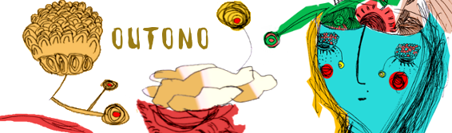

MutiraoBlogagemOutono
Blogagem Coletiva - Outono 2010
Folhas amareladas e caídas, retorno inicial ao ciclo do carbono. Remixagem. Tudo apodrece e vira adubo. Os ícones e os mitos sempre se renovando. Dopre, senhora do remix, que comanda os ciclos de apodrecimento e recombinação. Uma rede, composição abstrata de pessoas e contextos, que continua reorganizando tudo aquilo em que se reconhece. A eterna crise de identidade como processo criativo.
A Blogagem Coletiva de Outono 2010 do Mutirão da Gambiarra busca a composição do imaginário do outono (a queda, a preparação para o inverno, o silêncio, a meditação) com a rede MetaReciclagem e suas vizinhanças. O material gerado durante da Blogagem será aproveitado no MutSazOutono2010. Vale tudo: artigos, posts, fotos, ensaios, vídeos, rabiscos, aforismos, haikais.
POSTS
- Lixo Nosso: Editorial Fotográfico Colaborativo
Hudson
http://picasaweb.google.com/hudsonaugusto/BlogagemColetivaOutono2010MultiraoGambiarra http://metanave.blogspot.com/2010/04/lixo-nosso-de-cada-dia.html
Mbraz
http://rede.metareciclagem.org/wiki/MutiraoMbrazMutsazOutono2010
- Lambe-lambes de Outono
Hudson
- Outono: contos, resenhas, registro de trabalhos, pesquisa, memórias
Morgana
http://rede.metareciclagem.org/wiki/MorganaMutSazOutono2010
Dalton
http://daltonmartins.blogspot.com/2010/05/da-reciclagem-e-construcao-de....
Algarra
http://luizalgarra.blog.br/2010/05/19/metareciclando/
Hd - "Portinha":
"série que chamei de portinha, pois qdo mudei de apto. estava sem tela e comecei a usar as portinhas de um armario de eucatex. dos 8 quadrinhos esses tres são os mais gambiarrentos... eu usei a portinha para misturar as tintas. o primeiro pintei por cima... ficou um relevo louco; os outrs 2 eu pintei na parte de tras do eucatex... onde há uma textura ehhehe"
mais em http://www.flickr.com/photos/hdhd/tags/portinha/
http://www.flickr.com/photos/hdhd/4618471236/sizes/l/
http://www.flickr.com/photos/hdhd/4618472210/sizes/l/in/photostream/
http://www.flickr.com/photos/hdhd/4617853001/sizes/l/
Renato Fabbri
http://docs.google.com/present/edit?id=0ASnluupUWCthZGRyNzRuNXNfMzdzY3NjOXNxdA&hl=en
Bicarato
Leminskiando
Ellen Sluis
http://marieellensluis.wordpress.com/2010/05/31/amazonian-geeks-and-soci...
Thread da lista
http://rede.metareciclagem.org/wiki/MutiraoThreadOutono2010
Felipe
http://rede.metareciclagem.org/blog/25-05-10/Duas-conversas-em-Manchester
http://desvio.weblab.tk/blog/rol%C3%AA-parte-2-velhomundo-insular
Tati Prado
http://rede.metareciclagem.org/blog/27-05-10/Folhas-da-%C3%BAltima-esta%...
"Gambiarra Translations":
http://devolts.org/msst/?p=77
- Dopre - A Musa do Outono
- Meta Entrevistas
Orlando e Tininha
http://rede.metareciclagem.org/wiki/Tininha-Llanos-para-o-MutSaz
glerm
Praticidades:
Quando: de 19 a 26 de maio de 2010.
Para a blogagem de outono propomos algumas ações:
- Lixo Nosso: Editorial Fotográfico Colaborativo. A intenção é que cada pessoa fotografe o lixo eletrônico que guarda em suas casas. E junto com a imagem também enviar as seguintes informações: o que é/era o equipamento, desde quando foi colocado naquele lugar e permanece inutilizado, e por que ainda não foi descartado. Chamada em parceria com o http://lixoeletronico.org;
- Lambe-lambes de Outono: Com a imagem de Dopre e o conceito desse MutSaz. Para participar basta baixar o arquivo aqui, em papel a4, usando uma impressora colorida. A ideia é simples. Cole o lambe em um lugar legal, fotografe, conte a historia do processo, porque escolheu o local, e poste o resultado nos dias da blogagem. O objetivo é linkar os processos de diferentes cidades e esporos da MetaReciclagem;
- Dopre - A Musa do Outono: Construir coletivamente o mito da 'musa' de outono, na página MutiraoDopre. Publicaremos o texto bricolado no MutSaz de outono;
- Meta entrevistas: metarecicleiros entrevistam metarecicleiros. Além das perguntas vale contextualizar brevemente um pouco sobre o entrevistado, a localidade em que se encontra e o seu trabalho atual;
- Outono: contos, resenhas, registro de trabalhos, pesquisa, memórias.
{kind=link}
Como participar:
- Cadastrar-se na lista e mandar uma mensagem com a url do post em que publicou a colaboração;
- Linkar diretamente a url na página da chamada de Outono 2010;
- Ou, ainda, mandar uma mensagem para o mutirão, com o assunto "MutSaz Outono 2010" e a url do post em que publicou a colaboração.
| Anexo | Tamanho |
|---|---|
| outono_final_2010.odt | 53.53 KB |
- 2631 leituras
Comentários recentes
1 ano 31 semanas atrás
2 anos 6 dias atrás
2 anos 2 semanas atrás
2 anos 16 semanas atrás
2 anos 16 semanas atrás
2 anos 18 semanas atrás
2 anos 19 semanas atrás
2 anos 19 semanas atrás
2 anos 19 semanas atrás
2 anos 19 semanas atrás